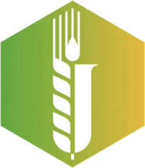
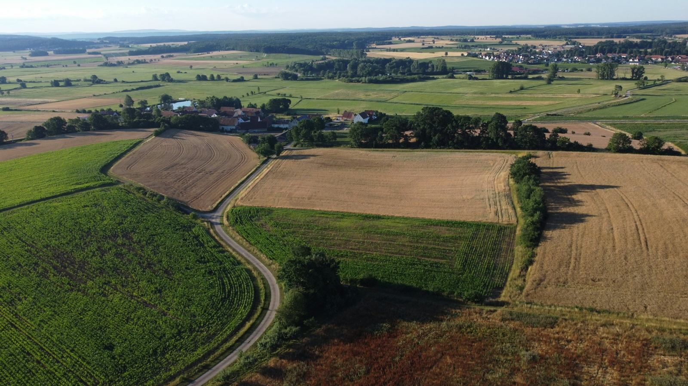
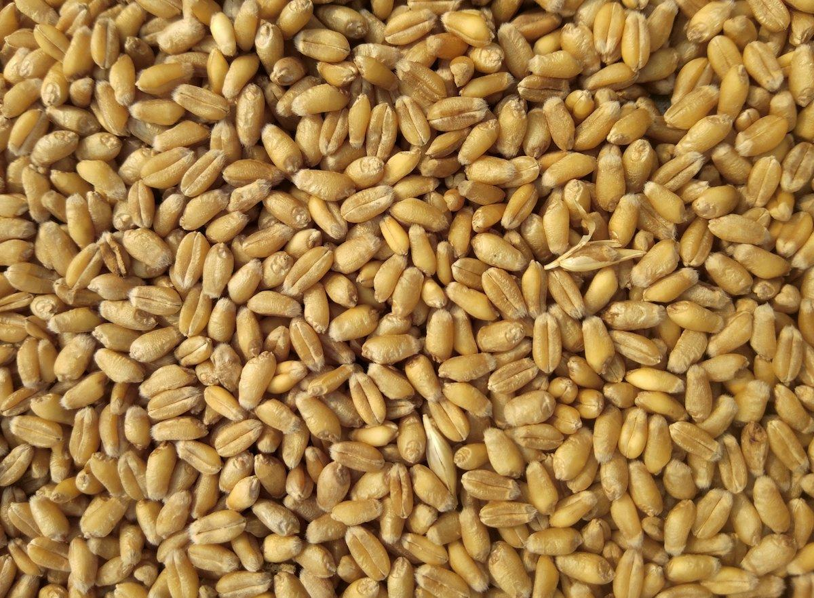
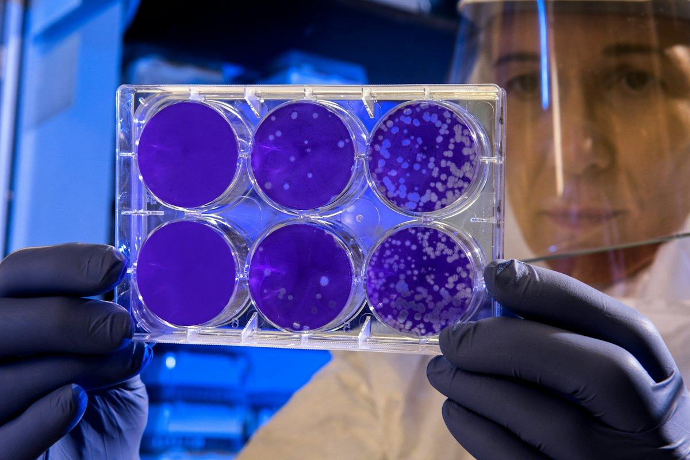
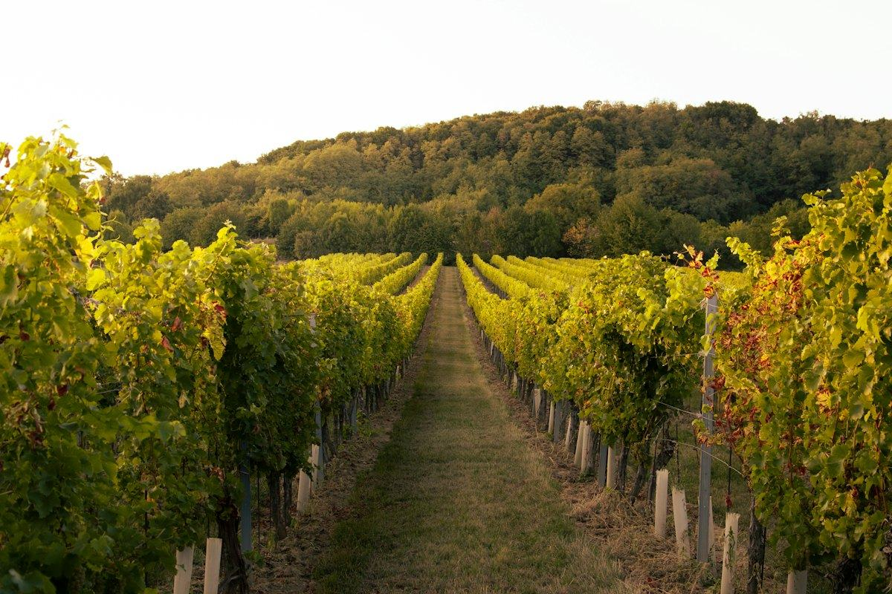
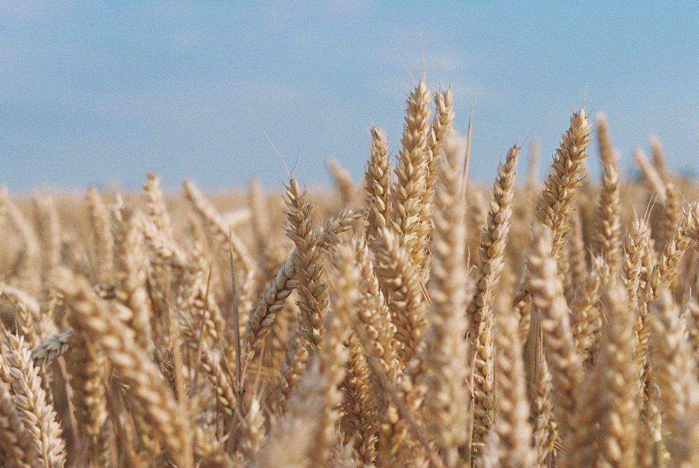
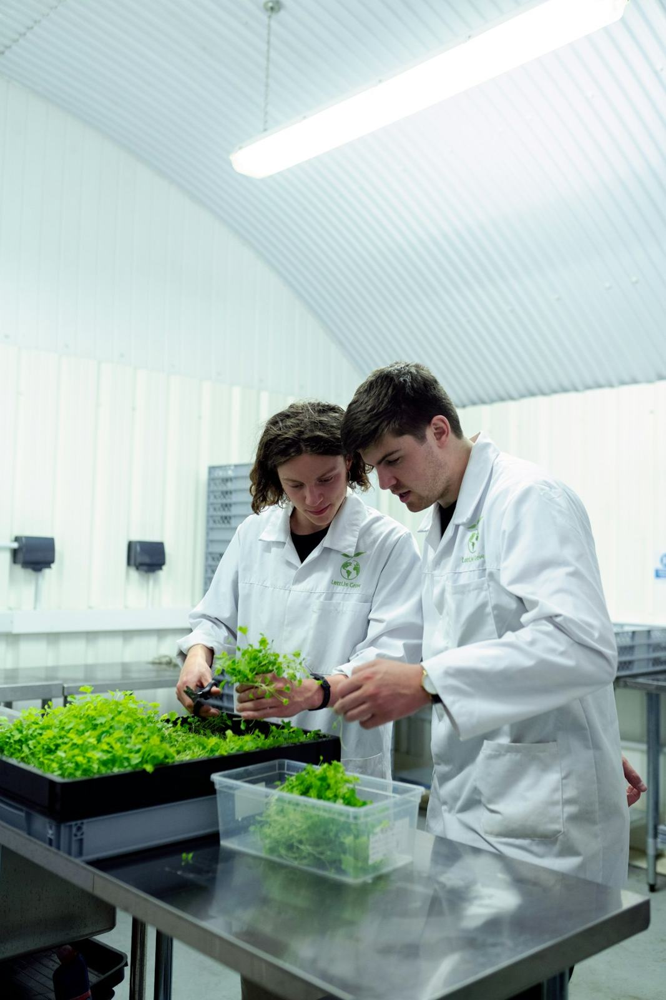
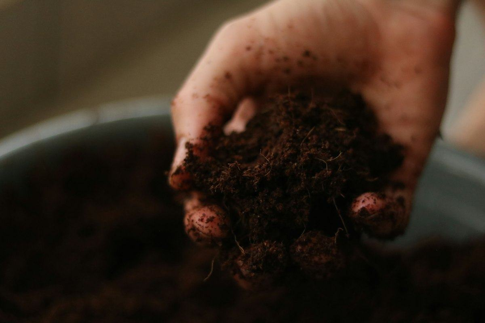
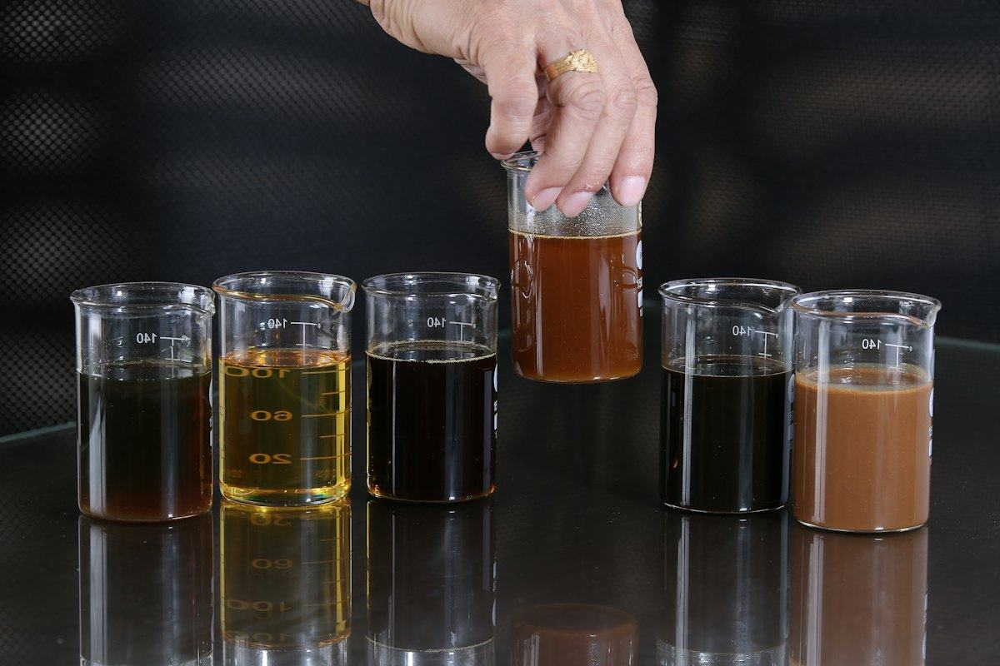

CARC Národní centrum zemědělského a potravinářského výzkumuJsme největší výzkumná organizace v resortu zemědělství. Propojujeme výzkum zemědělství, potravin, životního prostředí a bioekonomiky – a jeho výsledky předáváme do praxe.








Výsledky výzkumu převádíme do postupů a nástrojů pro zemědělce, poradce i veřejnost.
Šest oborů do sebe zapadá jako buňky plástu: od genetiky a zdraví rostlin přes půdu a techniku až po potraviny a víno.
Všechny oboryVýsledky, které se dostanou na pole, do sadů, do potravinářských provozů i na talíř.
Sledujte nás, přijďte na akci, nebo s námi pracujte.